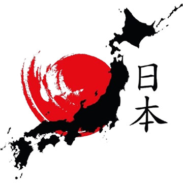

Mari belajar Huruf Jepang
Pelajari huruf dasar bahasa Jepang – Hiragana, Katakana, dan Kanji. Mulai dari pengenalan karakter, cara penulisan, hingga latihan membaca dan menulis. Semua materi tersedia gratis untuk Anda.
Pelajari huruf dasar bahasa Jepang – Hiragana, Katakana, dan Kanji. Mulai dari pengenalan karakter, cara penulisan, hingga latihan membaca dan menulis. Semua materi tersedia gratis untuk Anda.


| あ a | か ka | さ sa | た ta | な na | は ha | ま ma | や ya | ら ra | わ wa |
| い i | き ki | し shi | ち chi | に ni | ひ hi | み mi | り ri | ||
| う u | く ku | す su | つ tsu | ぬ nu | ふ fu | む mu | ゆ yu | る ru | ん n |
| え e | け ke | せ se | て te | ね ne | へ he | め me | れ re | ||
| お o | こ ko | そ so | と to | の no | ほ ho | も mo | よ yo | ろ ro | を wo / o |
| ア a | カ ka | サ sa | タ ta | ナ na | ハ ha | マ ma | ヤ ya | ラ ra | ワ wa |
| イ i | キ ki | シ shi | チ chi | ニ ni | ヒ hi | ミ mi | リ ri | ||
| ウ u | ク ku | ス su | ツ tsu | ヌ nu | フ fu | ム mu | ユ yu | ル ru | ン n |
| エ e | ケ ke | セ se | テ te | ネ ne | ヘ he | メ me | レ re | ||
| オ o | コ ko | ソ so | ト to | ノ no | ホ ho | モ mo | ヨ yo | ロ ro | ヲ wo / o |
| 日 matahari / hari | 月 bulan | 山 gunung | 川 sungai | 人 orang | 口 mulut | 手 tangan | 目 mata |
| 火 api | 水 air | 木 kayu | 金 emas / uang | 土 tanah | 空 langit | 雨 hujan | 田 sawah |
| 女 perempuan | 男 laki-laki | 子 anak | 友 teman | 先 sebelum / depan | 生 hidup | 学 belajar | 校 sekolah |
| 食 makan | 飲 minum | 行 pergi | 来 datang | 入 masuk | 出 keluar | 大 besar | 小 kecil |
| 上 atas | 下 bawah | 右 kanan | 左 kiri | 早 cepat | 名 nama | 白 putih | 黒 hitam |